地政学
マカオは中国の特別行政区として、一国二制度の枠内で珠海、香港、広州、深圳を結ぶ湾岸都市圏に置かれます。小さな境界管理、橋、港、空港が外交、観光、資本移動、国家統合の現実を日々の通行に映す都市です。今も続きます。
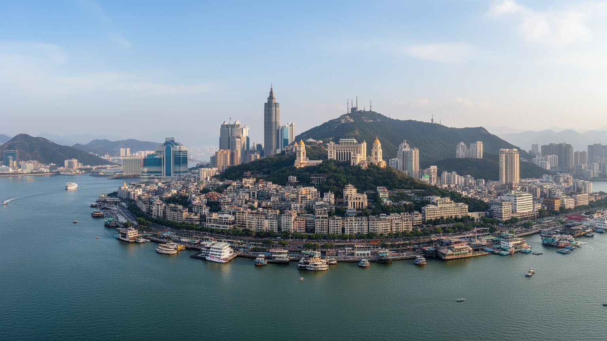
🇲🇴 中国マカオ特別行政区 / 珠江デルタ / World City Atlas
珠江河口の小さな半島と埋立地に、ポルトガル語圏の記憶、世界遺産の坂道、巨大カジノ、越境通勤、庶民の市場、寺廟と教会が密集する特別行政区です。
都市の骨格
マカオは広い後背地を持たない代わりに、半島の古い街路、タイパとコロアン、コタイの埋立地、珠海への境界、香港へ伸びる橋を重ねて都市を運営しています。
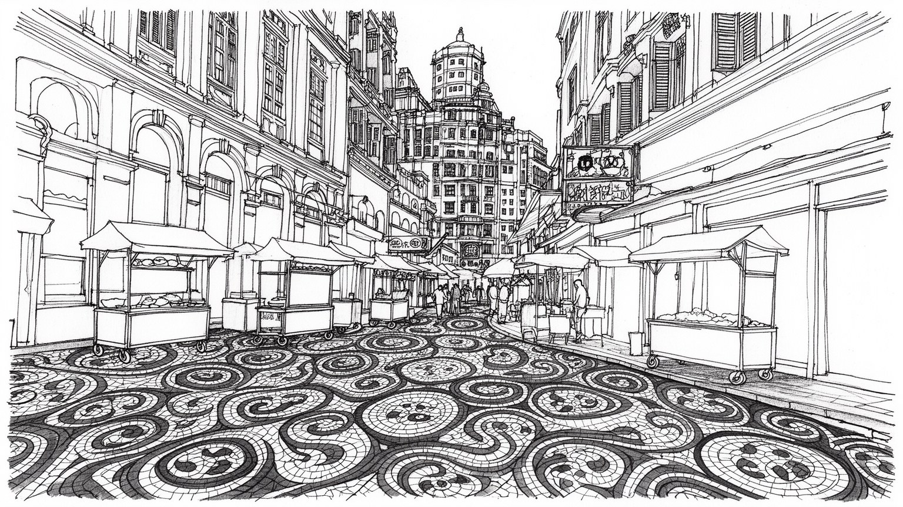
マカオは中国の特別行政区として、一国二制度の枠内で珠海、香港、広州、深圳を結ぶ湾岸都市圏に置かれます。小さな境界管理、橋、港、空港が外交、観光、資本移動、国家統合の現実を日々の通行に映す都市です。今も続きます。
歳入と雇用はカジノ、ホテル、飲食、会議、観光小売に深く依存します。ディーラー、清掃、厨房、警備、送迎、建設、越境通勤者の仕事が巨大施設を支え、繁忙と景気変動が暮らしへ直に響く都市です。課題も残る街です。
聖ポール天主堂跡、セナド広場、媽閣廟、カトリック教会、道教寺廟、広東語の市場、ポルトガル風の石畳が隣り合います。信仰と植民地の記憶は観光記号である前に、地域の暦と家族史を支えています。今も続く都市です。
旅行者は世界遺産、カジノ、夜景、エッグタルトを短時間で巡るが、住民には高い住宅費、狭い街路、観光混雑、台風、越境通勤、介護が日常です。観光収入と生活の静けさをどう両立させるかが問われます。今も重要です。
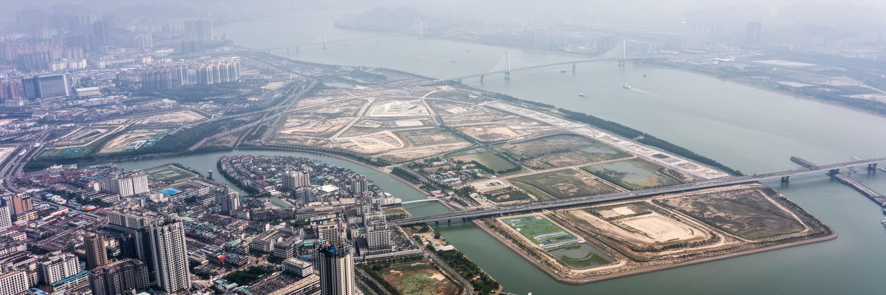
マカオを読む第一の入口は、都市の小ささと接続の大きさが同時にあることです。マカオ半島は珠海と陸続きで、南にタイパとコロアン、その間の埋立地コタイが広がります。海を越えれば香港、北へ向かえば珠海、広州、深圳を含む珠江デルタの産業地帯が続きます。面積は限られるが、港、空港、橋、境界検査場、フェリー、ライトレール、バスが密に組み合わさり、観光客、労働者、物資、資本を短い距離で動かします。都市の地理は自然地形だけでなく、埋立、橋梁、国境管理、観光施設の配置で作られています。古い半島は坂道、広場、市場、寺廟、教会が細かく重なり、コタイは巨大ホテルと会議施設が広い床面を占めます。珠江河口の湿った空気、台風、高潮は、華やかな夜景の背後で都市運営の条件になります。マカオの地理は、狭い土地に世界規模の移動を受け止める実験場です。珠海側から毎日入る通勤者、香港からの日帰り客、本土各地からの団体旅行、国際会議の参加者は、同じ道路と境界を使います。都市の容量は建物の大きさだけでなく、通行、待ち時間、災害時の避難で測られます。さらに、埋立によって増えた土地は観光投資を受け止めたが、海岸線の記憶や漁村の感覚を薄めてもいます。半島の密度とコタイの巨大さを対比して歩くと、マカオが限られた地面を何度も作り替えてきた都市だと分かります。水際を読む視点が要ります。
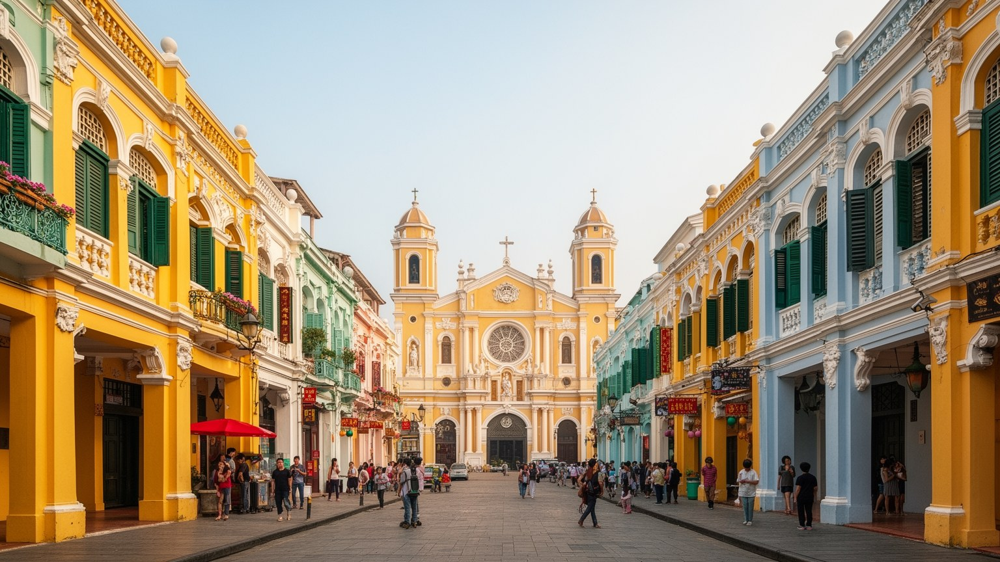
マカオの歴史地区は、単なる欧風の背景ではなく、東アジアとポルトガル語圏が長く接触した港町の記憶でできています。セナド広場、聖ポール天主堂跡、モンテの砦、聖ドミニコ教会、リラウ広場、媽閣廟は、宗教、交易、軍事、行政、住民生活が狭い街路で交差してきたことを示します。石畳や淡い色の建物は観光客に分かりやすいが、その背後には広東語の市場、ポルトガル語の法制度、マカエンセの家庭料理、カトリックの学校、華人商人のネットワークがあります。返還後もポルトガル語は制度と教育の一部に残り、中国とポルトガル語圏諸国を結ぶ外交的な役割も担います。ですが遺産は保存すれば自動的に生きるわけではありません。家賃上昇、観光店舗化、住民の高齢化、日常商店の減少は、歴史地区を生活の場所から写真の背景へ変えかねありません。マカオの遺産を読むには、建築の美しさだけでなく、誰が住み、祈り、働き、どの言語で記憶を伝えるのかを見る必要があります。世界遺産の価値は、複数の文化が衝突しながら共存してきた都市の経験にあります。歴史地区を歩く時は、広場の舗装や教会の正面だけでなく、裏通りの洗濯物、学校の門、古い菓子店、寺廟の供物も同じ遺産として見るべきです。保存の意味は、過去を飾ることより、生活が記憶を使い続ける条件を残すことにあります。言語の重なりも街の重要な資産です。今も続きます。
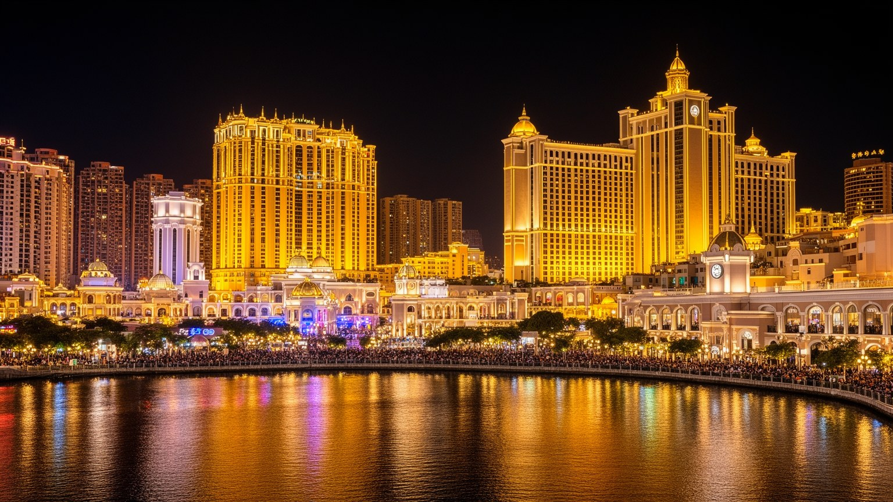
マカオの経済を語る時、カジノを避けることはできません。ゲーミング産業は政府歳入、雇用、ホテル投資、観光客数、交通量、不動産価格に強い影響を持ちます。コタイの巨大リゾートは、賭場だけでなく、客室、劇場、会議場、ショッピングモール、飲食店、送迎バス、警備、清掃、バックヤードを一体で運営する都市装置です。高い収益は公共財政を支え、住民への給付や社会サービスの余地を作る一方、景気の変動、規制、感染症、訪問客の減少に弱いです。産業が一つの柱に寄りすぎるほど、若者の職業選択、技能形成、賃金構造も影響を受けます。カジノは華やかな客席だけでなく、深夜勤務、監視、接客ストレス、依存症、資金管理、反汚職、治安の課題を伴います。マカオの強さは小さな都市が世界規模の観光収入を得る点にありますが、その強さは同時に脆さでもあります。会議、文化観光、医療、金融、創造産業への多角化は繰り返し掲げられるが、実際には土地、人材、市場規模の制約が大きいです。カジノ経済を読むことは、都市が富をどう得て、どの労働で維持し、リスクを誰が負うのかを読むことです。税収に余裕がある時ほど、住宅、教育、職業訓練、依存症対策へ投資できるかが問われます。単一産業の成功を社会の安定へ変えられるかどうかが、マカオ経済の成熟を決めます。数字の華やかさだけでは暮らしは測れません。
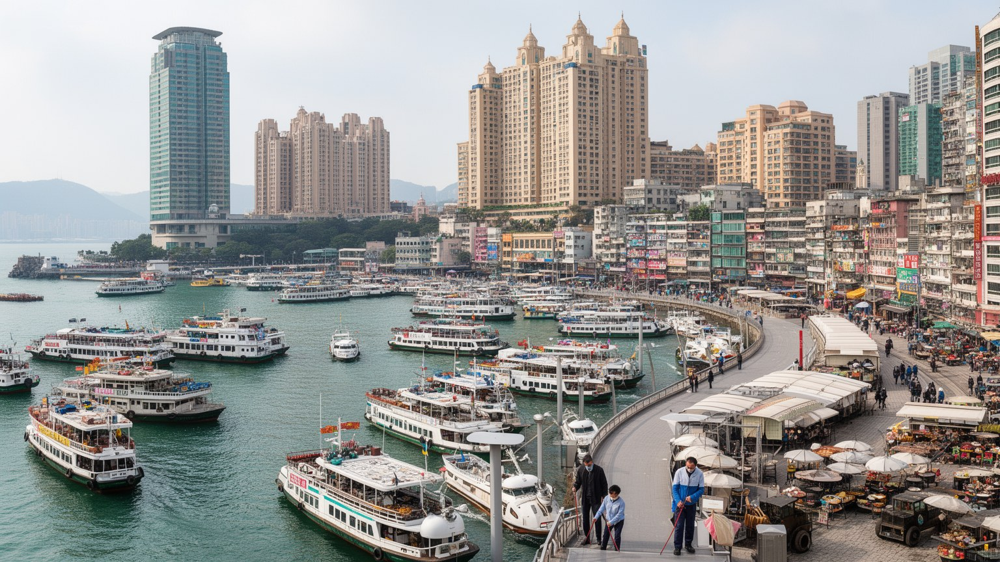
マカオ観光は、世界遺産を歩き、カジノやショーを楽しみ、料理を食べ、香港や珠海と組み合わせる短い滞在で成立することが多いです。ですが旅行者の快適さは、ホテルの清掃、ベッドメイク、厨房、警備、ディーラー、バス運転、通訳、販売、施設管理、国境管理、建設、廃棄物処理に支えられています。繁忙期には歩道やバス停が混み、歴史地区の小さな路地に団体客が集中します。観光は収入を生む一方、住民の日常の移動、買い物、静けさを圧迫することがあります。働く側にも、シフト勤務、夜勤、顧客対応、言語能力、サービス品質への圧力が重なります。マカオでは本地住民だけでなく、中国本土、フィリピン、東南アジア、ポルトガル語圏から来た労働者も都市を支えます。観光の成功を来訪者数だけで測ると、働く人の住まい、休息、賃金、家族生活が見えなくなります。小さな都市ほど、観光の利益と負担は同じ街路に現れます。マカオを持続的な観光都市にするには、混雑を管理し、生活商店を残し、現場労働を尊重する視点が欠かせません。旅の品質は、住む人と働く人の生活条件に直結しています。観光客が増える時間帯には、清掃や警備の仕事も同時に増え、夜遅くまで働く人の帰宅手段が必要になります。サービスの笑顔を都市の資源と見るなら、その背後の疲労や技能も正面から扱わなければなりません。短い滞在にも長い労働があります。
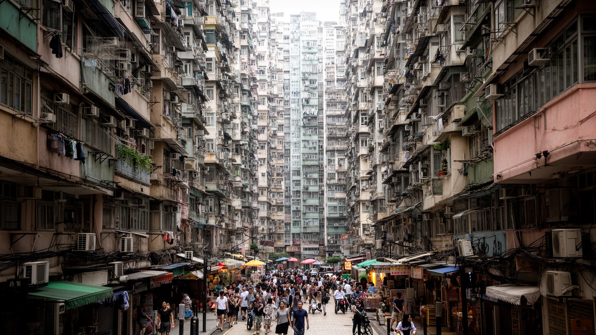
マカオの暮らしは、土地の限界を毎日感じる暮らしでもあります。半島の古い街区には細い坂道、低層の古い建物、商店、学校、寺廟、集合住宅が詰まり、埋立地には高層住宅と巨大施設が並びます。人口規模は大都市ほどではありませんが、面積が非常に小さいため、住宅価格、家賃、駐車場、公共空間、学校、介護施設の不足が重くなります。若い世帯は独立や子育ての住まいに悩み、高齢者は古い建物の階段、湿気、暑さ、医療への移動に向き合います。観光収入で都市は豊かに見えますが、住民が広く安定した住まいを得られるとは限りません。越境して珠海側に住み、マカオで働く人もいるため、生活圏は行政境界を越えます。住宅問題は単なる不動産市場ではなく、労働力、家族形成、介護、通学、災害避難、地域の記憶を左右します。再開発は安全性を高める可能性がある一方、古い路地の店や近所付き合いを失わせることもあります。マカオの都市密度を読むには、夜景の高さではなく、住民がどの広さで休み、どこで子どもが遊び、台風時にどこへ避難できるのかを見る必要があります。狭さは都市の魅力にも負担にもなります。高密度の生活は、近所の助け合いを生む一方、騒音、湿気、プライバシーの少なさも生みます。公共住宅、歩ける公園、涼める室内空間をどう増やすかは、観光政策と同じくらい重要な都市課題です。住まいの安定が街の記憶も守ります。
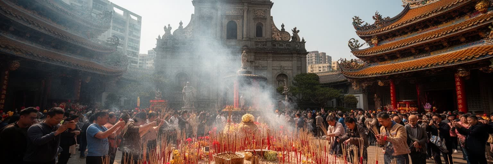
マカオの信仰は、寺廟と教会が観光名所として並ぶだけではありません。媽閣廟は海の守護、交易、地名の記憶を結び、ナーチャ廟や蓮峰廟、関帝廟のような場所は商売、家族、地域の祈りを受け止めます。カトリック教会は教育、慈善、祭礼、葬送、ポルトガル語圏の記憶と結びつき、街角には道教、仏教、民間信仰、キリスト教が重なります。旧正月、媽祖信仰、聖体行列、墓参、縁日、家族の供物は、観光の予定表ではなく住民の暦です。マカオでは宗教が大きな対立として見えるより、日常の節目や地域の顔として働くことが多いです。線香の匂い、鐘の音、教会学校、祭りの準備、路地を進む行列は、狭い都市に時間の層を作ります。信仰の場所は、歴史保存、観光収入、地域生活の間で揺れます。人が祈る場所を写真の背景だけにしてしまえば、都市の記憶は薄くなります。マカオの宗教を読むには、建物の様式だけでなく、誰が掃除し、供物を用意し、子どもに由来を教え、葬送を支えるのかを見る必要があります。多宗教の近さは、港町が培った生活上の調整力を示しています。祭礼の日には道路の使い方が変わり、商店や家庭も準備に加わります。信仰は過去の遺物ではなく、観光都市の中で住民が自分たちの時間を取り戻す方法でもあります。寺廟と教会が近いことは、違いを消すことではなく、狭い街で互いの音や行列を受け入れてきた歴史を示します。その寛容さは日常の作法として残ります。
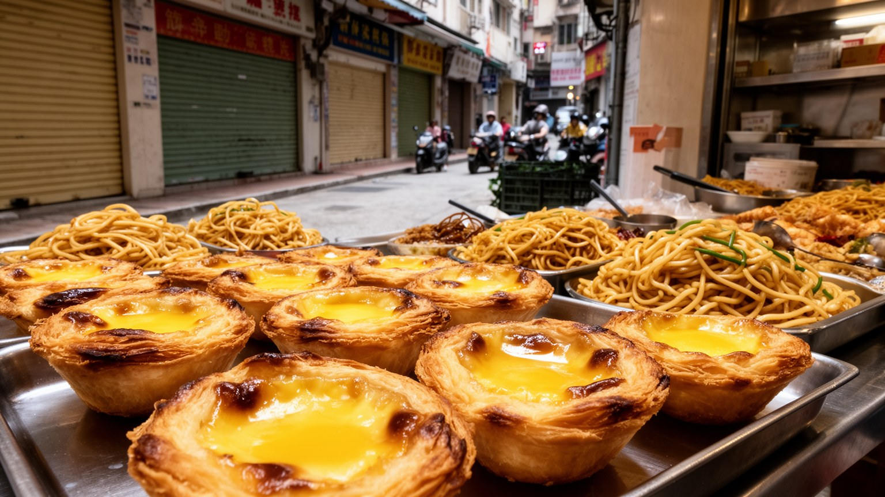
マカオの食文化は、広東料理とポルトガル料理が単純に並ぶだけではありません。マカエンセ料理には、海上交易、植民地の家庭、東南アジアやインド洋の香辛料、広東の食材、ポルトガル語圏の調理法が重なります。ミンチィ、アフリカンチキン、バカリャウ、エッグタルト、豚扒包、粥、麺、点心、乾物、市場の惣菜は、観光客向けの名物であると同時に、家族の記憶や労働者の食事でもあります。小さな茶餐廳、老舗の菓子店、路地の食堂、ホテルの高級レストランは、同じ都市に違う時間を作ります。観光化が進むほど、味は分かりやすい商品になり、家賃や人手不足で小さな店は続けにくくなります。食の魅力を守るには、レシピだけでなく、仕入れ、家族経営、言語、常連客、昼休みの回転、若い料理人の継承を支える必要があります。マカオの料理は、港町が外来文化を受け入れ、家庭の台所で調整し、都市の記憶へ変えてきた証拠です。皿の上にある混交は、博物館より身近な歴史でもあります。食べ歩きの楽しさの背後にある生活の味を読むと、マカオの多層性が見えてきます。観光客が行列を作る店だけでなく、早朝の市場、労働者の昼食、家族の祝いの席を見ると、食が都市の階層をつないでいることが分かります。料理は、言語や制度より柔らかく記憶を運ぶ媒体です。小さな店を残すことは、味の多様性を守ることでもあります。今も続きます。
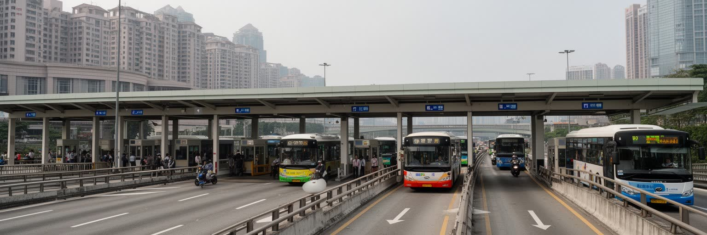
マカオの日常は、境界を越える移動なしには成り立たありません。北の関閘や横琴との接続、港珠澳大橋、フェリー、空港、バス路線は、観光客だけでなく労働者、学生、買い物客、家族を動かします。珠海に住んでマカオで働く人、マカオから本土へ買い物や通院に行く人、香港と組み合わせて旅をする人が、毎日の待ち時間と検査を経験します。境界は壁であると同時に、賃金差、住宅価格、消費、教育、医療、家族生活を調整する装置です。一国二制度の下で、通貨、法律、車線、通信、言語、行政手続きが近距離で切り替わります。移動が滑らかになるほど、マカオは大湾区の一部として機能しやすくなりますが、独自性や生活のリズムが薄まる不安も生まれます。観光客には橋やフェリーが便利な交通手段に見えますが、住民にとっては仕事の始業時刻、家賃の選択、子どもの学校、親の介護に関わる生活線です。マカオの境界を読むことは、地図上の線ではなく、人が何分待ち、どの書類を持ち、どの言語で案内を受けるのかを読むことです。小さな都市の外部依存は、移動の制度に最もはっきり現れます。交通が止まれば、ホテル、厨房、家庭、学校の予定も止まります。便利な広域圏は、境界を越える人の時間をどれだけ尊重できるかで評価されるべきです。移動の自由度は、都市の包容力を測る指標にもなります。境界の設計は暮らしの設計でもあります。
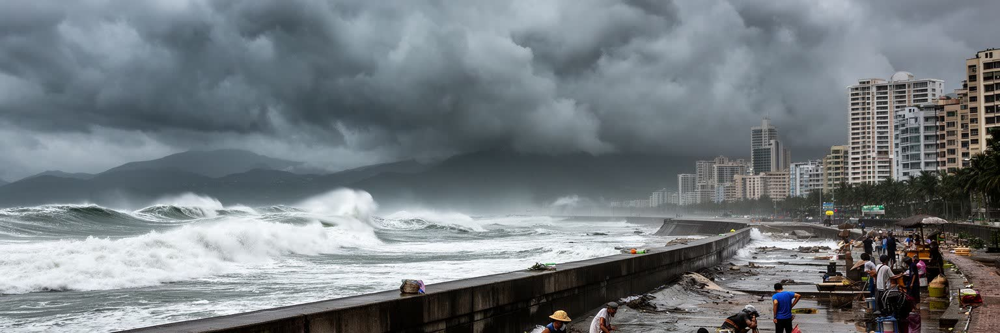
マカオの気候は、観光の穏やかな南国イメージだけでは語れません。夏は高温多湿で、海霧、豪雨、台風、高潮が都市を試します。狭い低地、埋立地、地下空間、海沿いの道路、歴史地区の古い建物は、風水害に弱い部分を持ちます。台風が近づくと、ホテル、カジノ、港、空港、学校、市場、境界検査場、バス運行、清掃、警備が一斉に調整を迫られます。高潮の記憶は、防潮施設、排水、非常電源、避難情報、地下駐車場の管理を都市計画の中心へ押し上げました。気候変動で海面上昇や強い雨のリスクが増せば、マカオのように土地が小さく海に近い都市は、早い段階から適応を迫られます。暑さは屋外労働者、高齢者、観光客、古い住宅の住民に重く、冷房は電力需要を高めます。都市の安全は豪華な建物だけでなく、排水溝、避難所、多言語警報、近所の見守り、建物管理の細部にかかっています。マカオを読む時、海は美しい眺めであると同時に、都市の限界を知らせる存在です。沿岸都市としての成熟は、観光景観と防災を同じ計画で扱えるかに表れます。とくに高齢者や外国人労働者へ早く情報を届ける仕組みは重要です。気候リスクは全員に同じように降りかかるのではなく、住む場所、言語、仕事の時間によって重さが変わります。海に近い豊かさを保つには、日常の防災教育と建物管理を地道に続ける必要があります。備えも文化になります。
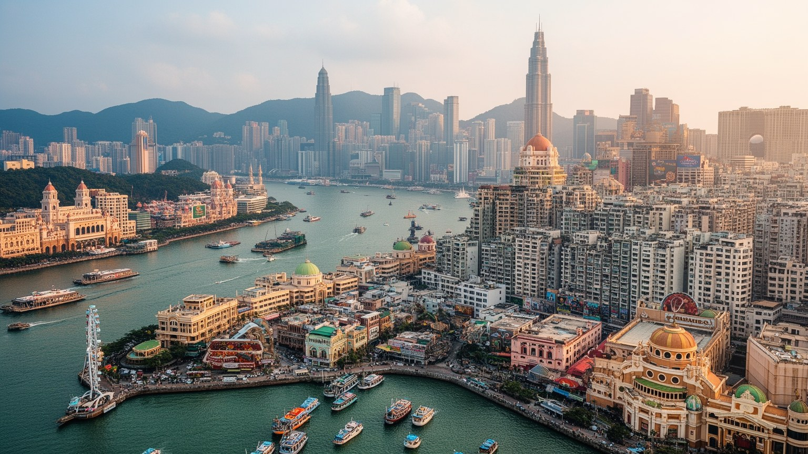
マカオを読むことは、小さな都市に世界規模の力が折り重なる様子を読むことです。半島の坂道にはポルトガル語圏の制度、カトリック、広東語の市場、華人商人の記憶が残り、コタイの巨大施設には現代の観光資本、監視、会議、娯楽、サービス労働が集まります。北の境界では珠海との日常移動が続き、海の向こうには香港と大湾区の経済圏が広がります。世界遺産、カジノ、料理、夜景は分かりやすい入口ですが、都市の核心は狭い土地で住まい、労働、信仰、観光、災害対策をどう重ねるかにあります。マカオは豊かな歳入を持ちながら、産業依存、住宅価格、観光混雑、台風、文化保存、越境労働という課題を抱えます。特別行政区としての制度は、独自性を守る装置であると同時に、中国の国家統合と地域開発の中で位置づけられます。マカオの価値は、単に小さなラスベガスとしてではなく、港町の混交、植民地後の制度、アジア観光経済、密度の高い生活が同時に見える点にあります。写真に映る派手さと、路地で続く日常を一緒に読むことで、この都市の複雑さが立ち上がります。小ささは弱点であると同時に、都市の矛盾を濃く見せるレンズでもあります。世界の多くの観光都市が、収益と生活、遺産と開発、境界と移動の調整に悩んでいます。マカオはその問題を非常に短い距離の中で見せるため、都市を読む教材としても重要です。